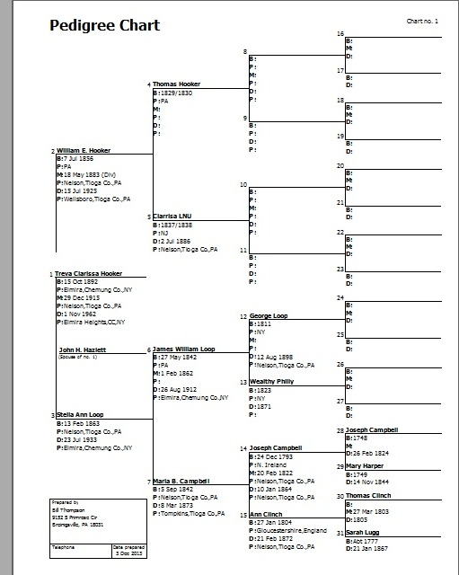
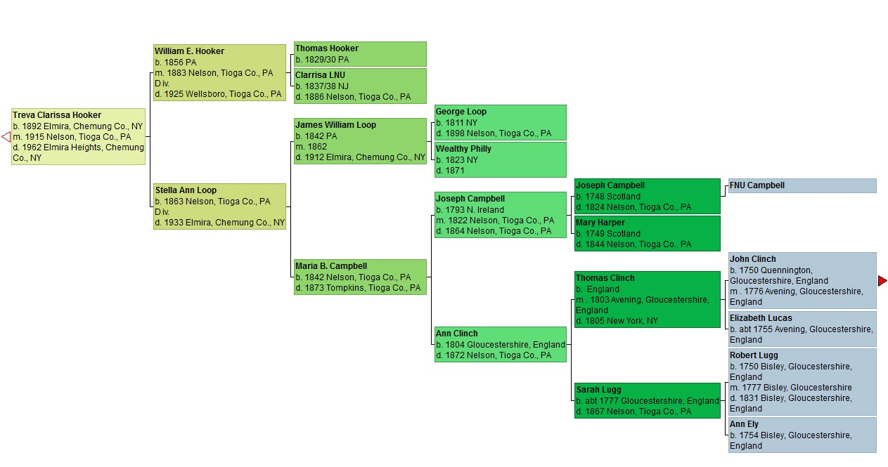
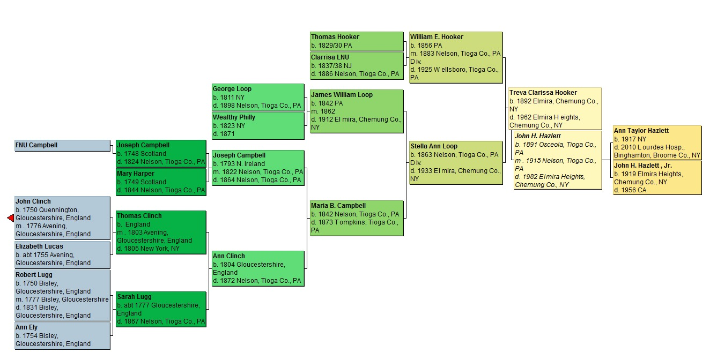

As an incentive for early registration for our Aug 2, 2014 Campbell Reunion, we would like to offer a chart of the registrant's ancestry, to be picked up at the reunion. We are asking you to pick a format to be used for all of these reports.
Below are examples of three different report formats for showing you ancestry, Choices A & B only show ancestors, Choice C shows both ancestors and descendants. Cousin Treva HOOKER Hazlett (no snickers please) was selected for the sample charts because she has no living descendants and thus no privacy concerns apply. (She had 2 children, but no grandchildren.)
These charts show 5 or 6 generations. We now have 10 generations of Campbells, and even more for Luggs and Blackwells. So, if we give you a chart of all of your ancestors that are in our tree, printing it out require several pages --- which you can tape together or put in a nice ringbinder or scrapbook.
Please pick your favorite.
A) Pedigree Chart (ancestors only).
B) Ancestry Chart (ancestors only).
C) Hourglass Chart (ancestors & descendants).
